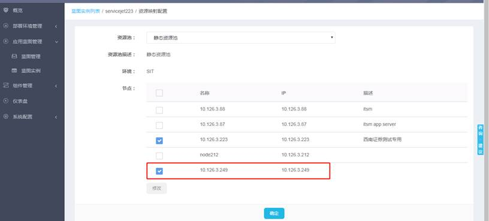
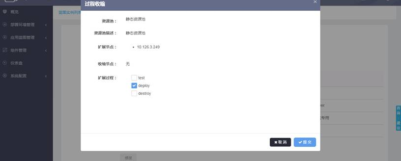
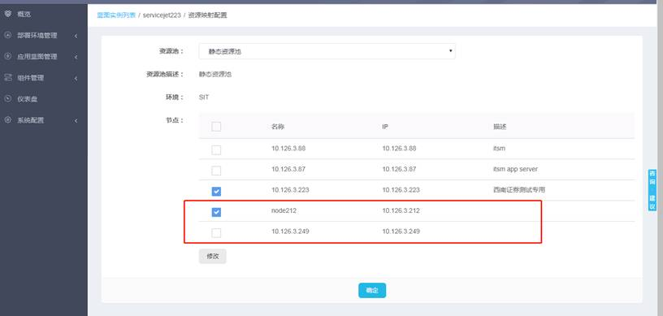
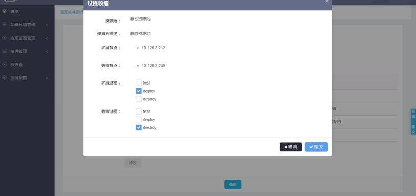

点击蓝图实例列表页的操作按钮，选择“资源映射”，可以通过选择新的节点或者取消选择已有节点，实现对蓝图实例的扩缩。
如下图所示，如果想对蓝图实例进行扩展就可以按照需要新选择之前未勾选的节点。

比如新选择了红色方框内的节点，那么点击“修改”，再点击“确定”。就会跳转到如下界面。

因为刚刚只有新选择的节点没有取消勾选的节点，所以显示了一个扩展节点，而收缩节点是无。此时可以根据需要选择扩展过程，在新选择的节点上执行相应的过程，以实现对蓝图实例的扩展。
如果想同时进行伸缩操作，可以进行如下类似的操作

取消249节点，新增212节点，此时点击确定，则弹出如下对话框

分别选择对应的流程提交即可